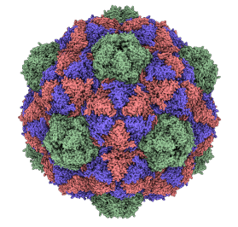
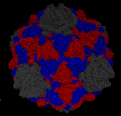

All atomic models are acquire in PDB format and are, with few exceptions, acquired from the RCSB Protein Databank.
TESTESTESTESTEST.

The ambiguities of the geometrical method prompts us to include additional assumptions that encode structural properties of the capsid. Here we propose that the classification scheme be augmented with the following assumption.
Assumption: Capsomers correspond to quasi rigid domains of a viral capsid
Here we use the same definition of a quasi rigid domain as described in [ref]. A rigid structures is a structure in which the distances between elements of the structure are fixed over time and under transformations in space. A quasi-rigid structure is thus a structure where the fluctuations between elements of the structure are minimized. We calculate the pairwise distance fluctuation of a structure in the following manner.
\[\begin{equation} f^{2}_{ij} = Var(d^{2}_{ij}) = \langle d^{2}_{ij} \rangle - \langle d_{ij} \rangle ^{2} \end{equation}\]A quasi rigid domain of a protein structure is a domain of the protein which satisfied our definition of a quasi rigid structure.
Among coarse grained models aimed at describing large scale molucular dynamics the most popular options are Elastic Network Models (ENM). Most elastic network models begin by coarse graining the system at the residue level by considering only the coordinates of the alpha carbon atoms in each residues. These are chosen as representative atoms for each residue, and are connected by springs to all other residues within a given cutoff distance.
The potential of the Anisotropic Network Model takes the following form.
\[\begin{equation} V(\vec{x}) = \frac{1}{2 \sum_{i|i \neq j} \Gamma_{ij} (||\vec{x}_i - \vec{x}_j|| - ||\vec{x}^0_i - \vec{x}^0_j||) } \end{equation}\]where $\Gamma$ is our spring connectivity matrix defined as follows.
\[\begin{equation} \Gamma_{ij} = \biggr \{ \begin{array}{ll} \gamma, & R_{ij} \leq r_c \\ 0, & R_{ij} > r_c \end{array} \end{equation}\] \[\begin{equation} \mathbf{H}_{ij} = \frac{\textbf{$\Gamma$}_{ij}}{R_{ij}^2} \vec{r}_{ij} \otimes \vec{r}_{ij} \end{equation}\]The diagonal blocks of our Hessian Matrix are also 3x3 matrices.
\[\begin{equation} \mathbf{H}_{ii} = - \sum_{i|i \neq j} \mathbf{H}_{ij} \end{equation}\]|  |
|---|
| Figure 1: A representation of an Elastic Network Model using the example pdb 2e0z. |
We are interested in the large scale dynamics of the capsid near equilibrium. This prompts us to make use of a technique called Normal Mode Analysis.
Normal Mode Analysis is a technique aimed towards describing the equilibrium dynamics of a physical system. It aims to approximate the way the system fluctuates around the equilibrium by assuming oscillatory behavior and considering only a subset of the normal modes of the system. The assumptions necessary to allow this technique are that the system has a specific equilibrium configuration and that all particles in the system interact under a simple harmonic potential. This assumption is taken to be accurate only locally. The further the system strays from the equilibrium the less accurate this technique will be.
The method disregards any specific interactions and constraints in the system. As a result it describes only macroscopic motions of the system and will fail to represent complex bonds within a protein. This means it is best paired with a model that also doesn’t concern itself with microscopic forces and constraints. It also suggests that the technique is best applied to systems large enough that collective motions are dominant.
The mathematical formulation of NMA begins by examining a taylor series of the potential about the equilibrium.
\[\begin{equation} V(\vec{x}) = V(\vec{x^0}) + \sum_{i}\Delta x_i \frac{\partial V}{\partial x_i }\biggr|_{x=x^0} + \sum_{i,j}\Delta x_i \Delta x_j \frac{\partial^2 V}{\partial x_i \partial x_j }\biggr|_{x=x^0} + \dots \end{equation}\]The first and second terms of this expansion are zero in any equilibrium conformation. Truncating the remaining terms gives us our second order expansion of our potential about the equilibrium.
The matrix of second derivatives of our potential around the equilibrium is called the Hessian Matrix.
\[\begin{equation} H_{ij} = (\frac{\partial^2 V}{\partial x_i \partial x_j})^0 \end{equation}\]Our equation of motion may be written using the Hessian as follows:
\[\begin{equation} \boldsymbol{M} \frac{d^2 \Delta \vec{x}}{dt^2} + \boldsymbol{H} \Delta \vec{x} = 0 \end{equation}\]Where the matrix M is a mass matrix, which in our case is the identity matrix and can be ignored. The normal modes of the system are thus solutions to the following eigenvalue problem.
\[\begin{equation} \boldsymbol{H} \vec{v_k} = \omega^2 \vec{v_k} \end{equation}\]We

Now that we have determined the pairwise distance fluctuations between the residues of the capsid we need to determine an optimal subdivision, or clustering, of the system. There exist many algorithms to identify optimal clusterings of data. One of the most effective algorithms used when dealing with large, sparsely connected systems is Spectral Clustering. This method requires us to first transform our measure of dissimilarity, distance fluctuations, into a measure of similarity.
\[\begin{equation} S_{i,j} = e^{-D_{i,j}^2 / 2 \bar{D}^2} \end{equation}\]We can use the nature of connectivity in our model to simplify our similarity matrix by setting the similarity of unconnected residues to zero.
Spectral embedding is a technique based on graph theory, and thus requires as an input a Laplacian Matrix. We can transform our similarity matrix into a Laplacian matrix, specifically the Symmetric Normalized Laplacian, with the following identity.
\[\begin{equation} \mathbf{L} = \mathbf{I} - \mathbf{D}^{-1/2} \mathbf{S} \mathbf{D}^{-1/2} \end{equation}\]The eigenvectors of this graph now represent a new set of points in a higher dimensional space that can be clustered using a simpler method such as the k-means algorithm.
Knowing the icosahedral rotation matrices ahead of time can allow us to simplify the memory requirements using icosahedral symmetry. If we have our points labeled by which asymmetric unit they belong to and their position within that asymmetric unit we can calculate the distance vector between points using the following equation.
\[\begin{equation} \textbf{r}_{ij,kl} = I_k \textbf{x}_{i} - I_l \textbf{x}_{j} \end{equation}\]A property of symmetry groups is that products of group actions yield another member of the group. We can use this fact to express distance vectors between members of the asymmetric unit copies in terms of the distance vectors between the base unit and all others because of the following relations.
\[\begin{equation} I_k^{-1} \textbf{r}_{ij,kl} = I_k^{-1} I_k \textbf{x}_{i} - I_k^{-1} I_l \textbf{x}_{j} = \textbf{x}_{i} - I_m \textbf{x}_{j} = \textbf{r}_{ij,0m} \end{equation}\] \[\begin{equation} \textbf{r}_{ij,kl} = I_k \textbf{r}_{ij,0m} \end{equation}\]Here $I_m$ is a solution to the following equation:
\(\begin{equation} \textbf{I}_m = \textbf{I}_k^{-1} \textbf{I}_l \end{equation}\) We calculate the solutions to eq. 4 ahead of time using the group table calculated from the rotation matrices.
The Distance matrix can be reduced without having to apply a rotation. This also applies to the connectivity matrix since it depends solely upon distance.
\[\begin{equation} \textbf{D}_{ij,kl} = \textbf{D}_{ij,0m} \end{equation}\]The Hessian Matrix is calculated using the outer product of the distance vectors.
\[\begin{equation} H_{ij,kl} = \frac{\textbf{$\Gamma$}_{ij,kl}}{\textbf{D}_{ij,kl}} \textbf{r}_{ij,kl} \otimes \textbf{r}_{ij,kl} \end{equation}\]The outer product between two vectors expressed using equation (3) yields:
\[\begin{equation} \textbf{r}_{ij,kl} \otimes \textbf{r}_{ij,kl} = I_k \textbf{r}_{ij,0m} \otimes \textbf{r}_{ij,0m} I_k^{-1} \end{equation}\]Since all of the matrices in equation (6) can be reduced this way the final reduction for the hessian is:
\[\begin{equation} \textbf{H}_{ij,kl} = I_k \textbf{H}_{ij,0m} I_k^{-1} \end{equation}\]